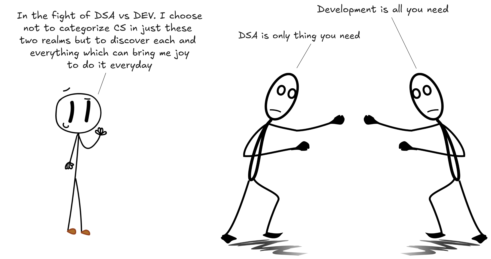
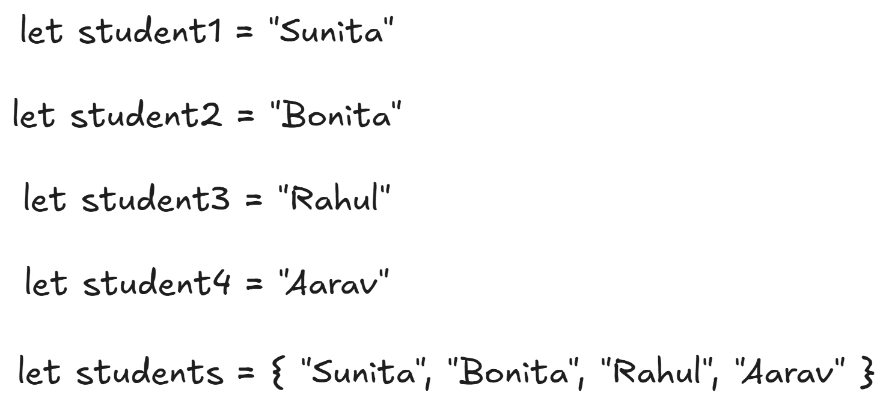
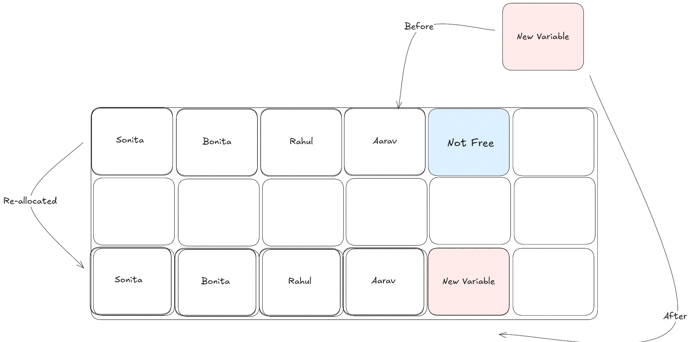
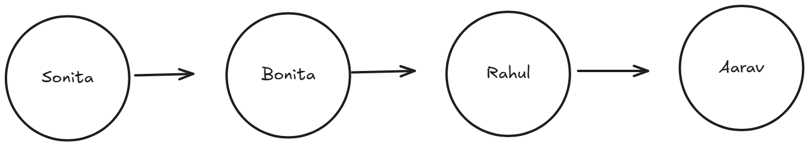
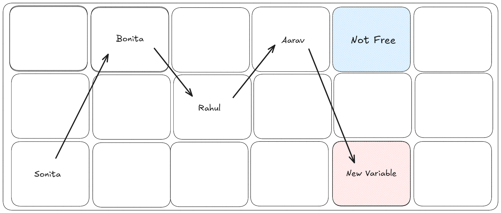
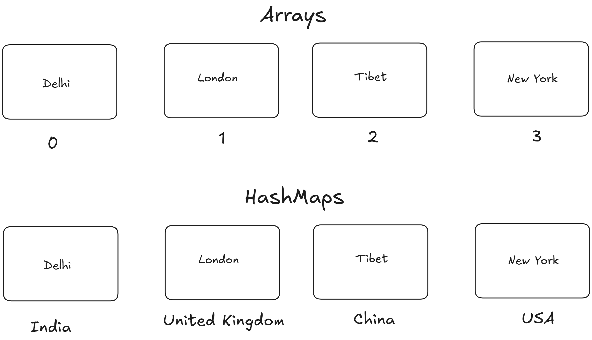
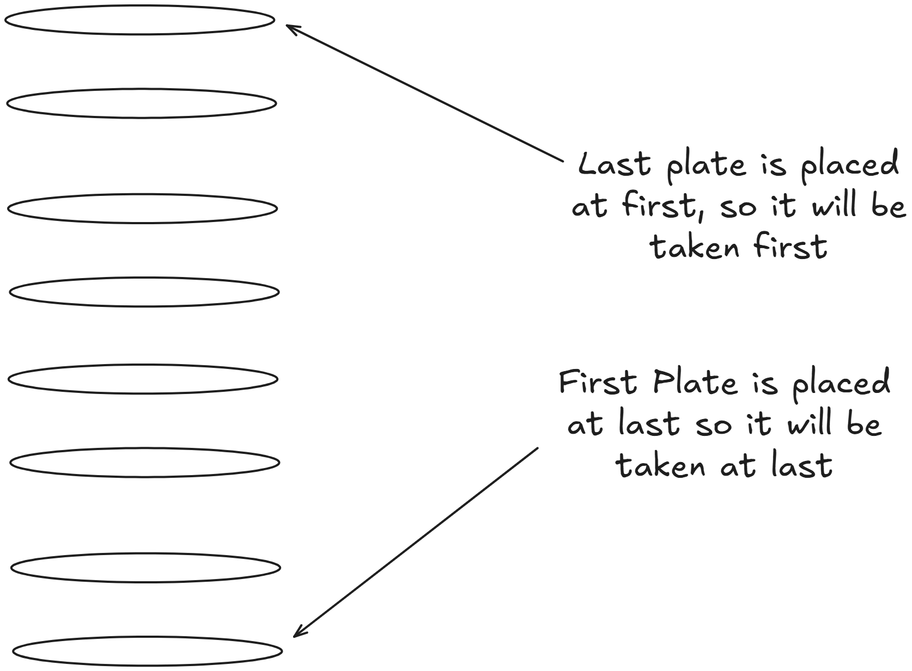
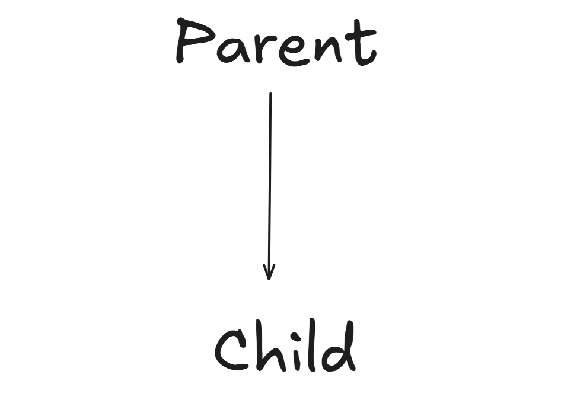
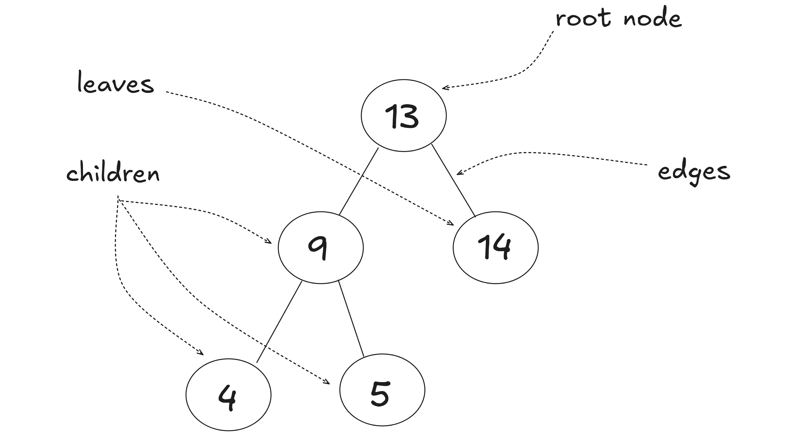

Whenever I think of data structures and algorithms it scares me a little because, past few interviews I have been lacking on my alorithms skills a little bit. But when I changed my prespective to learn it through building projects with just raw code like "Just working" mindset and then picking up every topic of data structures, learning it, and then applying the topic in the "Just working" project to make it more optimize

I will be covering few ds and algo that I use on everyday basis for my
development of project, paid gigs etc.
For the very first lets start with data structure topics, so going by the
name it means structuring a data or large set of data in a mannered way .
:)) WOOWWW !!
Starting with the easiest one, which is arrays then gradually increase the complexity of topics.
These are containers for storing multiple data types in a ordered manner, like a bunch of strings, a bunch of integers, or you can mix up the types of data that you want to be stored (only few languages allow this mix-up). Each elements in an array is assigned with a number known as "indexing", and arrays are zero-indexed which means first element's index is 0.
Lets talk a little bit about memory here, see arrays are stored in contiguos manner means each elements are stored which means elements of arrays are next to one another this makes reading arrays faster which is O(1) according to time complexity, but this also makes insertion and deletion of items slower
How doest insertion and deletion becomes slower ?? So here is the thing, arrays are always grouped together so if user pushes a new variable in the middle the arrays get updated accordingly. But what if the very next memory is not free, whole array with allocated memory needs to shift to a new place. This makes reading easier (O(1)) but insertion (O(n)) and deletion (O(n)) gets a bit slower.
Now arrays are basic, foundational data structures commonly used in the first approach itself without even thinking, as they efficiently store and manage collections of elements. But we will look down for problem which it really solves. :))
You are building a simple to-do list app for yourself, you want to store and display tasks they've completed today.
Linked list are just opposite to arrays, they are faster while insertion and deletion of items while a bit slow on reading items. It consists of nodes where each node holds data and a pointer(address to another node). Also
This structure makes linked lists dynamic and flexible in scenarios where frequent insertions and deletions are required.
Let's talk about memory a little bit, each node is stored independently, containing the data and a pointer to next node, which allows linked lists to grow or shrink dynamically without needing to resize a predefined array. This dynamic allocation is memory efficient for datasets which are unpredictable with their sizes. However reading becomes slow as if you want a element from middle you need to get the first element then to the desired item, this some times leads to memory fragmentation over time, as nodes are scattered across memory.
Okkay how I learned it in a hard way ?? I was building a backend service to manage a queue of user support ticket. Each ticket needs to be processed in order, and new tickets can come in dynamincally.
After discussing with GPT, I got to realise this is not the most efficent methods to use, go then I got to know about Linked List and then how to use it, this is how I implemented it from scratch.
Now what is FIFO ?? its a simple way of saying how the data will be flowing in a particular way, like FIFO means First In First Out, and on the other hand we have LIFO which means Last In First Out
As an engineer I would have questioned, how would I optimize a linked list for faster read operations if traversal time becomes a bottleneck ??
Hash maps or Hash tables, are just like arrays but here the values of a key instead of a index number, which makes it a key-value pair. This makes the reading, inserting and deleting process faster typically O(1) on average. Hash maps use a clever trick called hashing to map keys directly to their values, making them incredibly efficient for specific use cases.
For example if we are storing capitals of a country then instead of indexing we can store the country name instead.
Here is a small example which I learned in python, it is also known as dictionary in python
Lets talk about memory little bit. Hash maps gives up on memory for speed. They allocate fized-size, which might waste space if not full utilized. Collisions can also slow things down if the hash function isn't well-designed or the load factor (ratio of entries to array size) gets to high. Unlike linked lists, hash maps don't preserve insertion order so they're not suited for sequential processing.
So you might have question what if we need to maintain the order of elements while also needing fast lookups ?? Here comes stacks, its a linear data structure that follows the Last In, First Out(LIFO) principle. A simple explaination of stacks would be a stack of plate, the first plate would be at bottom and picked at last, and the last plate would be picked up at first
there are four major operations performed on this and the upcoming data structure which are Push (add an element to the top (O(1)). Pop (remove and return the top element (O(1)). Peek/Top (view the top element without removing it (O(1)). IsEmpty checks if the stack is empty (O(1))
My favourite part MEMORY, stacks can be implemented using arrays or linked lists. An array-based stack requires a fixed or dynamically resized array, which may waste space if not fully utilized(similar to hash maps). A linked list-based stack allocates memory per node (data + pointer), growing or shrinking dynamically like a linked list.
Linked list-based stacks avoid resizing overhead but may cause memory fragmentation, as nodes are non-contiguous. Array-based stacks are more memory-efficient for predictable sizes but require resizing if the stack grows beyond capacity, temporarily doubling memory use during resizing
The best pactical way to use stacks is by building a UNDO or REDO funtion, each user action (e.g., typing or deleting) is to be pushed onto a stack. Pressing "undo" popped the most recent action, reverting the change. A stack is ideal because the last action needed to be undone first
Queues are just opposite to stacks they follow the FIFO principle which means First In First Out, like a line at a ticket counter: the first person in line is served first. Queues are ideal for processing tasks in the order they arrive. Also queues and stacks share the same memory implications
One of the best ways to visualize a stack is with a YouTube channel's video list. The most recently uploaded video appears at the top, while the oldest video is at the bottom, resembling a stack's Last In, First Out (LIFO) structure.
The upcoming topics are one the best things I have learned so far, also do give some attempts for solving the few questions related to all the topics enlisted here :)
Trees are hierarchical data structures consisting of nodes connected by edges, with a single root node at the top and child nodes branching out. Each node can have zero or more children, and nodes without children are called leaves.
Nodes have parent child direction, where each node (except the root) has exactly one parent, and a parent node can have zero or more children. This directional structure defines the hierarchy, with edges pointing from parent to child, enabling efficient modeling of relationships like organizational charts or file systems.
Knowing little about memory here, trees are memory efficient for hierarchical data but fragmented due to dynamic allocation, if a tree is balanced it optimizes memory and performance by keeping height low, while unbalanced trees waste memory on pointers for deep, linear structures
A question would pop on your mind, what is even a balanced tree ?? So memory scales with the number of nodes (O(n)). A balanced tree with n nodes has a height of O(log n), minimizing traversal time, while an unbalanced tree may resemble a linked list with O(n) height
Lets talk more indepthly about trees using Binary Search tree, a tree where the left child's value is less than the parent's, and the right child's value is greater, this enables O(log n) searches, insertions, deletions if balanced, but O(n) if skewed
One best usecase for BST could implementing a topic from my blog about System Design which is database indexing for ordered data retrieval
Graphs and algorithms need separate attention, so I am working on those blogs in my free time. If you urgently need those you can ping me or mention me on X(@Hi_Mrinal) will release it asap. Hope I was able to add few value to your todays learning :))
Happy Learning Anon :)